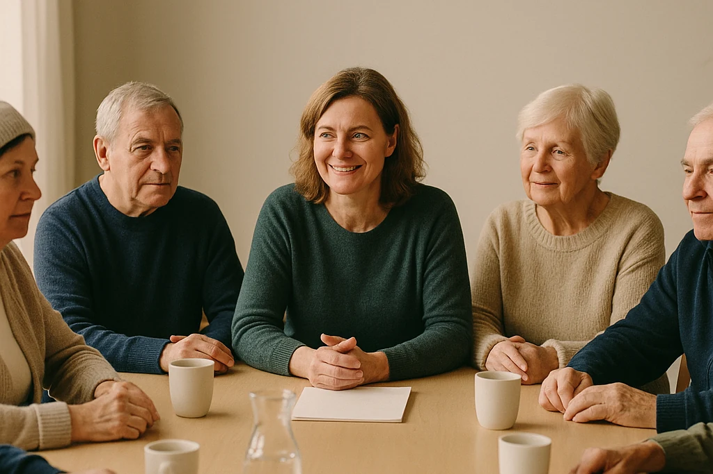

Frivillig på Hovstua
De kommer hver torsdag. Nå trenger de noen å snakke norsk med.
Seks eldre ukrainere møtes trofast for å øve på norsk. Når du gir litt av torsdagen din, gir du dem flere ord å møte hverdagen med.

En liten gruppe med stort pågangsmot
De gir seg selv tid til å lære
De er mellom 64 og 72 år. De lærer i sitt eget tempo, men nysgjerrigheten og viljen er det ingenting å si på. Hver torsdag klokken 10 møtes de på Hovstua - klare for nye ord, en ny samtale og litt mer trygghet i norsk hverdag.
Nå trenger gruppen flere mennesker rundt bordet. Mennesker som har tid til å lytte, forklare én gang til og la alle få prøve seg.
Du trenger ikke være lærer. Du trenger tålmodighet og hjerterom.
Bli samtalevert
Du setter praten i gang
Som samtalevert leder du en rolig og uformell samling. Du velger et enkelt hverdagstema, hjelper alle med å bli med og gir ordene den tiden de trenger.
-
Ta initiativ
Start en enkel samtale eller øvelse om noe kjent fra hverdagen.
-
Inviter alle inn
Gi hver enkelt god tid til å finne ordene og bli med i samtalen.
-
Forklar rolig
Gjenta på en vennlig måte når noe ikke sitter med én gang.
-
Skap trygghet
Gjør det trygt å prøve, og helt i orden å gjøre feil.
Du trenger ingen pedagogisk bakgrunn. Vi ser etter deg som møter andre med varme, tålmodighet og respekt.
Det praktiske
Litt over én time kan bety mye
- Når
- Torsdager kl. 10.00
- Varighet
- Litt over én time
- Hvor
- Hovstua
Hovseterveien 84E - Hvor ofte
- Én eller flere torsdager i måneden
Vi søker flere frivillige, så du trenger ikke komme hver uke.
Én torsdag kan bety mye
Har du lyst til å høre mer?
For deg er det litt over en time. For deltakerne er det en ny mulighet til å finne ordene, bli forstått og kjenne seg tryggere i møte med hverdagen.
Du binder deg ikke til noe ved å spørre.
Møte mellom mennesker
Vestre Aker Frivilligsentral skaper møteplasser mellom mennesker og kobler frivillige med oppgaver som betyr noe i nærmiljøet.